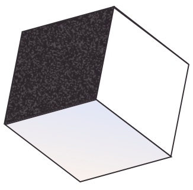

Lauren Nicole Smith
👋 I'm a Product Designer and Manager at Flatiron Health. Previously I led the product design team at ATTN: Media.
You can find me spending a lot of my free time with #thatdoglincoln and mentoring designers who want to get started in UX, HTML and CSS.
